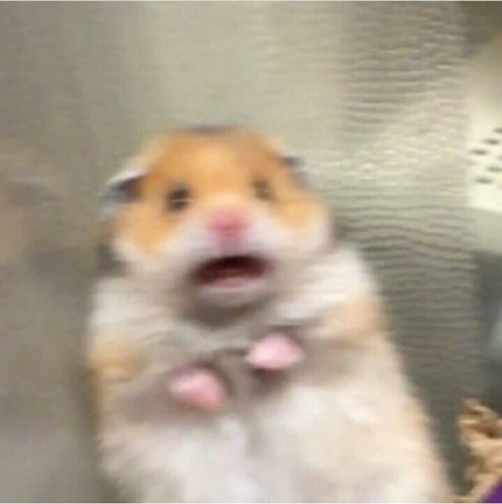
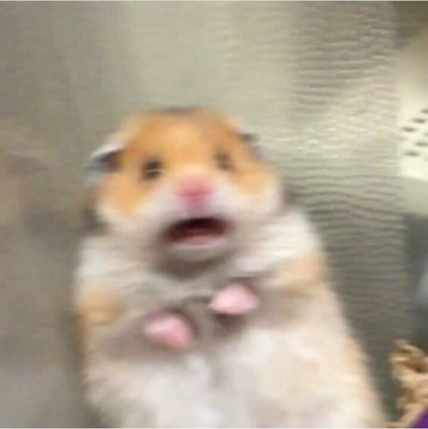

나를 사랑할 수 있게 만들어주는 사람들을 만났다. 시선은 자연스레 옮겨졌고, 감사하며 책을 읽고있다. 나를 지탱하는 것들이 점점 늘어난다. 나에게 주어진 것들에 감사하며 살아간다. 평범하지만 특별한 나에게 주어진 상 같은 사람들. 나를 사랑해주는 고마운 존재들. 그들을 위해 오늘도 나에게 한걸음 더 다가선다.
20대 초중반, 어쩌면 후반까지도 난 한 달에 한 번씩은 기차나 고속버스를 타곤 했다. 항상 누군가를 만나러 가는 길이었는데 그 길은 새로운 사람을 만나러 가는 설렘과 두려움이 섞인 길이거나 사랑하는 사람을 만나러 가는 기분 좋은 길이기도 했다. 또한 피곤한 몸을 이끌고 기절하듯 잠들어 버리던 짧디짧은 길이기도, 일회성 만남에 허탈함과 함께 생각이 많아지던 영원에 가까운 먼 길이기도 했다. 분명한 건 모든 길은 끝이 난다. 즐겁고 행복한 길도, 포기하고 싶어도 버텨내야만 하는 죽을 만큼 힘든 길도 모두 끝이 난다. 나는 어디쯤 와 있는 걸까. 부서지고 뭉쳐졌다 다시 부서지더라도 움켜쥐고 놓고 싶지 않은 것이 있었다. 오늘 난 그것을 놓아버렸던 것 같다.